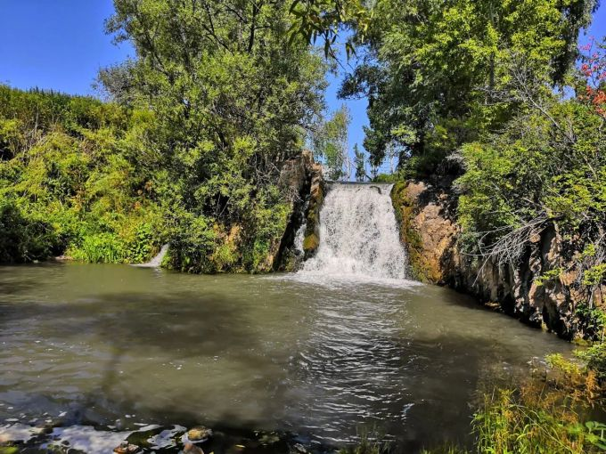

HIKING ESSENTIALS

Show What level of hiker are you?
Determining what level of hiker you are can be an important tool when planning future hikes. This hiking level guide will help you plan hikes according to different hike ratings set by various websites like All Trails and Modern Hiker. What type of hiker are you – novice, moderate, advanced moderate, expert, or expert backpacker?
Показать Какой вы уровень любителя походов?
Определение вашего уровня любителя походов может стать важным инструментом при планировании будущих походов. Это руководство по уровню похода поможет вам спланировать походы в соответствии с различными рейтингами походов, установленными различными веб-сайтами, такими как All Trails и Modern Hiker. Какой вы турист: новичок, средний, продвинутый, опытный или опытный турист?

GET STARTED
Picking the right Hiking Gear!
The nice thing about beginning hiking is that you don’t really need any special gear, you can probably get away with things you already have. Let’s start with clothing. A typical mistake hiking beginners make is wearing jeans and regular clothes, which will get heavy and chafe wif they get sweaty or wet.
Выбор правильного походного снаряжения!
Преимущество начала похода в том, что вам не нужно никакого специального снаряжения, возможно, вам сойдет с рук то, что у вас уже есть. Начнем с одежды. Типичная ошибка новичков в походах — ношение джинсов и обычной одежды, которая станет тяжелой и натирает, если они вспотеют или намокнут.

WHERE YOU GO IS THE KEY
Understand Your Map & Timing
To start, print out the hiking guide and map. If it’s raining, throw them in a Zip-Lock bag. Read over the guide, study the map, and have a good idea of what to expect. I like to know what my next landmark is as I hike. For example, I’ll read the guide and know that say, in a mile, I make a right turn at the junction..
Понимайте свою карту и время
Для начала распечатайте путеводитель и карту. Если идет дождь, бросьте их в пакет с застежкой-молнией. Прочтите руководство, изучите карту и получите хорошее представление о том, чего ожидать. Мне нравится знать, какой будет мой следующий ориентир во время похода. Например, я прочитаю путеводитель и знаю, что, скажем, через милю я на перекрестке поверну направо..

Photo Gallary
